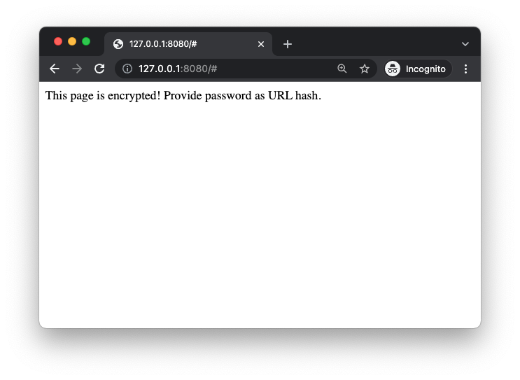
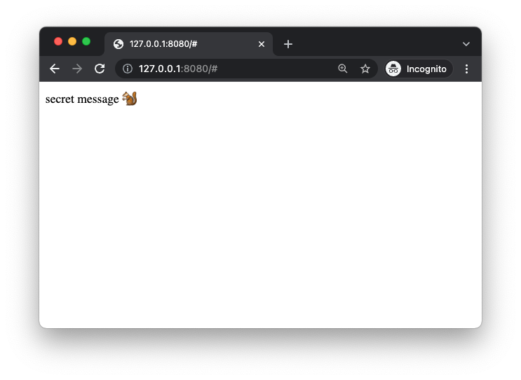
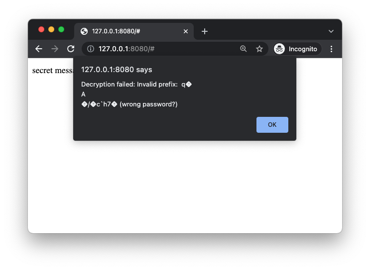

hscrypt demos #
Examples using hscrypt and hscrypt-webpack-plugin to encrypt and deploy static sites.
hscrypt simulates “anyone with the link can view” permissioning for publicly-hosted static web apps (e.g. on GitHub Pages). Please read the Disclaimer section before using.
Hello World #
Here’s a simple example (taken from 00-simple:
<!-- index.html -->
<html>
<body>
This page is encrypted! Please provide password as URL hash.
</body>
</html>
// secret.js
document.body.innerHTML = 'secret message 🐿' // inject secret message (or an entire application!) somewhere on page
// webpack.config.js
const path = require("path")
const HTMLWebpackPlugin = require("html-webpack-plugin");
const HscryptPlugin = require("hscrypt-webpack-plugin").default;
module.exports = {
entry: "./src/secret.js",
output: { path: path.resolve(__dirname, 'dist'), filename: "bundle.js" },
plugins: [
new HTMLWebpackPlugin({ inject: true, template: 'index.html' }),
new HscryptPlugin({ path: "dist", filename: "bundle.js", pswd: "my-password" })
]
}
# bash
npm install webpack
node_modules/.bin/webpack # build encrypted bundle
http-server dist # serve dist/ folder
Encrypted landing page #
Then open 127.0.0.1:8080 (or whichever port http-server prints):

This is index.html from above.
Decrypting via URL-hash password #
If you know the password (set at build time in webpack.config.js above), you can decrypt the page by adding the password as a URL “hash”: http://127.0.0.1:8080#my-password:

Decryption failure #
Incorrect password fails to decrypt, triggers an alert:

Disclaimer #
- There is cryptography here and I am not a cryptographer!
- Passwords should have ≥60 bits of entropy; see “Key Derivation”.
- I tried to use various crypto primitives correctly, but you should audit before trusting.
- I am not aware of any bugs, but to my knowledge no one else has looked at it. I make no representations that it is secure or does what it’s supposed to.
- My intention is to use
hscryptto host private data on GitHub Pages “soon”, and I will update this note when I do, but I am not currently relying on it “in production.”- I also intend to publish a honeypot encrypted site and offer a bounty ($20) to anyone that can break it (and explain it to me so that I can fix it 😄). I will also update this when that’s live.
Crypto(graphy) #
Here’s an overview of the cryptographic operations performed by hscrypt; please tell me if you spot any errors or think I’m thinking about something incorrectly.
ChaCha20 #
I found and used ChaChas20 after earlier experiments with PGP-encrypted pages (around gitlab.com/smondet/hscrypt), where my impression was that PGP-decryption at page load time was painfully slow. I searched for a faster symmetric cipher, and ChaCha20 seemed to be the best choice.
I ported thesimj/js-chacha20 to typescript: hscrypt/ts-chacha20. I am trusting js-chacha20, and have not audited it.
Encryption #
The encryption path is at hscrypt/js/src/encrypt.ts. Given:
- some Javascript source (e.g. the contents of a Webpack-compiled
bundle.js; see hscrypt/webpack-plugin), - a password
- a number of iterations for PBKDF2
- optional, defaults to 20k, but requires very strong passwords!
- see ⚠️ PBKDF2 iterations ⚠️ below for caveats/discussion)
hscrypt.encrypt will:
- generate a 32-byte salt and 12-byte nonce
- pass salt, iterations, and password to PBKDF2 to obtain the “encryption key”
- initialize a ChaCha20 encoder with nonce and encryption key
- prepend a “magic string” (
/* hscrypt */) to the JS source, encrypt it with ChaCha20 to obtain “ciphertext” - concatenate salt, nonce, and ciphertext, return this buffer
Decryption #
Decryption of an encrypted script bundle happens in hscrypt._decrypt, and basically just inverts the encryption path.
Given inputs:
encryptedbuffer returned byhscrypt.encrypt- password
- iterations (for PBKDF2)
- optional
decryptionKeyHex: whencacheDecryptionKeyis enabled, the decryption path can receive this value and skip an expensive key-derivation computation
hscrypt._decrypt will:
- slice nonce and ciphertext from
encryptedbuffer - if
decryptionKeyHexwas not provided:- slice salt from
encryptedbuffer - pass salt, iterations, and password to PBKDF2 to obtain the “decryption key”
- slice salt from
- initialize a ChaCha20 decoder with nonce and decryption key
- decrypt ciphertext using the ChaCha20 decoder to obtain “plaintext”
- verify that plaintext begins with the “magic string”
/* hscrypt */, remove it to obtain original Javascript source - return source as well as decryption key (the latter allowing for callers to cache it, to implement
cacheDecryptionKey)
Injection #
“Injection” of an encrypted script bundle into the page happens in hscrypt.inject which wraps the decryption path flow:
- check for password or decryption key in 3 places (short-circuiting on first find):
pswdargument tohscrypt.inject- URL hash (e.g. http://127.0.0.1:8080#my-password above; if a hash is found, it’s immediately removed from the URL bar (⚠️ ️️but likely exists in your browser’s history, as plaintext ⚠️)
- localStorage cache of decryption key (post-PBDKF2, not password; saves time on reload, when
cacheDecryptionKeyis enabled)
- if no password or decryption key is found:
- optionally register a
"hashchange"listener- if the user subsequently enters a hash (manually), or navigates to a hash of the current URL, re-attempt the injection+decryption flow
- fire a configurable callback (default:
console.loga message explaining that no password was found) - return
- optionally register a
- fetch the encrypted, remote source bundle (typically named e.g.
bundle.js.encrypted) - decrypt it
- if applicable, cache the decryption key (as a hex string) in
localStorage - if any errors arose, call a configurable callback
- by default, check if a cached decryption key was used, and if so, purge it (as evidently the encrypted bundle has changed so that the cached decryption key no longer works)
Key Derivation #
hscrypt uses PBKDF2 (provided by CryptoJS), with SHA512, and defaults to 20k iterations.
⚠️ 20,000 iterations of SHA512 means you should use passwords with ≥60 bits of entropy (see “Password strength” below). ⚠️
⚠️ hscrypt-encrypted bundles are designed to be published on the internet where anyone can download them and point password crackers at them, 24/7, indefinitely into the future. ⚠️
Your best defense will always be using a strong(er) password, which also doesn’t incur key-derivation time-cost during page load.
PBKDF2 iterations: 20k x SHA512 #
There is a direct tradeoff between “page load time” and “page security” embodied in the iterations param (passed to PBKDF2):
- hscrypt’s default configuration (20k x SHA512) loads a page in ≈1s on my 2021 Macbook Air.
- I’d like for pages to not be delayed longer than that when loading, so it is imperative that you use a strong enough password so that your page is as secure as you need it to be.
⚠️ 20k may not be enough iterations! You should compensate with strong passwords (or more iterations) ⚠️ #
-
OWASP recommendation: 120k iterations of SHA512, or 310k iterations of SHA256
-
1password uses 100k iterations of SHA256, cf. “1Password Security Design” whitepaper, pg. 19:
Your account password and the salt are passed to PBKDF2-HMACSHA256 with 100,000 iterations
As an aside: it’s interesting that 1Password is 3x lower than the OWASP recommendation; I interpret them both as targeting a level of security that is beyond what the average hscrypt site requires.
Another way to think about it is: for a given level of security, each extra bit of entropy allows for halving the iterations (and therefore key-derivation time)! A very strong password (e.g. a 20-byte Git SHA from a private repository using hscrypt/webpack-plugin) in principle would allow reducing the iterations to 0, and still be as secure as a 145-entropy-bit password (160 - log₂(20,000)).
Password strength, $/hashrate #
Here is some envelope-math about how much it may cost to crack passwords of various strengths, given PBKDF2 with 20,000 rounds of SHA512, and an attacker with a hashes-per-dollar ratio equal to that implied by the Bitcoin network:
| Entropy bits | Cost to crack* | Hex chars | Base64 chars | Diceware words |
|---|---|---|---|---|
| 40 | $0.01 | 10 | 6.7 | 3.1 |
| 45 | $1.74 | 11.25 | 7.5 | 3.5 |
| 50 | $257 | 12.5 | 8.3 | 3.9 |
| 55 | $38250 | 13.75 | 9.2 | 4.3 |
| 60 | $5.7MM | 15 | 10 | 4.6 |
| 65 | $842MM | 16.25 | 10.8 | 5 |
| 70 | $125BN | 17.5 | 11.7 | 5.4 |
| 75 | $18,557BN | 18.75 | 12.5 | 5.8 |
| 80 | $2,754,191BN | 20 | 13.3 | 6.2 |
* Assumptions/Notes:
- Password hashed with PBKDF2, using 20,000 iterations of SHA512
- Hashes/$ implied by current BTC hash rate:
- Hash rate (≈2e20H/s) / block reward (6.25BTC/10mins x $40k/BTC ⟹ ≈$400/s) ⟹ ≈5e17 hashes/$
- log₂([≈5e17 hashes/$] / [20,000 PBKDF2 iterations]) ≈ 44.5 bits of entropy ≈ $1
Conservative assumptions (I hope):
- $/SHA256 = $/SHA512: in reality, SHA512 is supposed to be “harder” than SHA256. I’m assuming it is at least as hard.
- Assumes attacker $/H equivalent to what BTC miners get with SHA256. Most real-world attackers of hscrypt bundles will presumably pay more per hash.
Again, I am not an expert and no one has vetted any part of this analysis or the hscrypt implementation!
Credits #
- Ben Newman (@benjamn) (lots of JS/TS/WP/ESM/CJS help)
- Seb Mondet (@smondet) (wrote gitlab.com/smondet/hscrypt, showed/explained it to me)
- Mykola Bubelich @thesimj (author of thesimj/js-chacha20)
Other inspiration #
robinmoisson/staticrypt: a very similar, apparently popular tool! Demo. I noticed it after I’d already done a fair amount of work on hscrypt, and thought I wanted some features or a different design that motivated continuing to write my own version of it anyway, e.g. password in URL hash, webpack integration, decryption-key caching (recently added in staticrypt#124!) and other deployment / configuration things I still haven’t gotten around to implementing. It may be that I’d have an easier time adding features to staticrypt. I need to do more diligence.